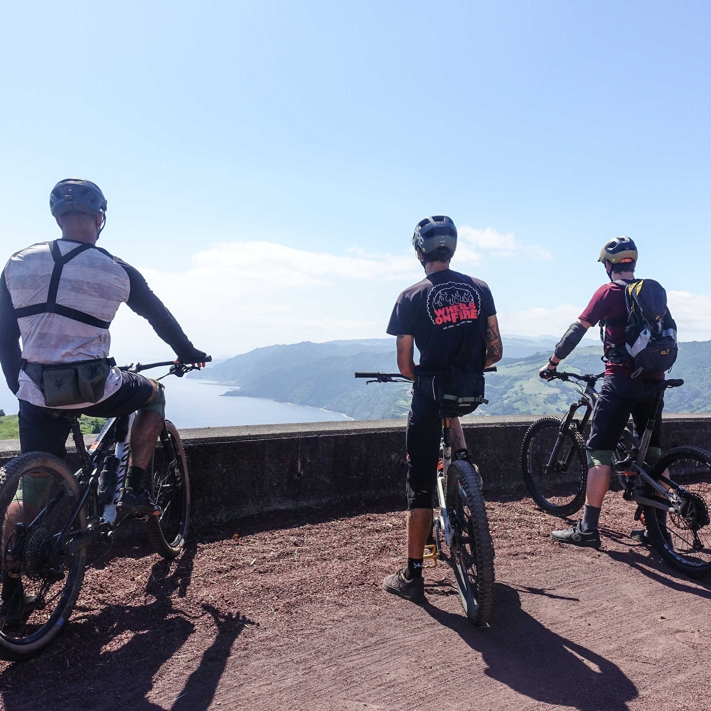

Bookings
wheelsonfireazores@gmail.com
Follow
Instagram YouTube
MTB adventures — S. Miguel

Our tours
Either in for a half, full or a couple of days — you'll sure feel your wheels on fire!
Ride will be adjusted to your needs & skills
6 tours
 Get in touch
Get in touch
Get in touch
Get in touch